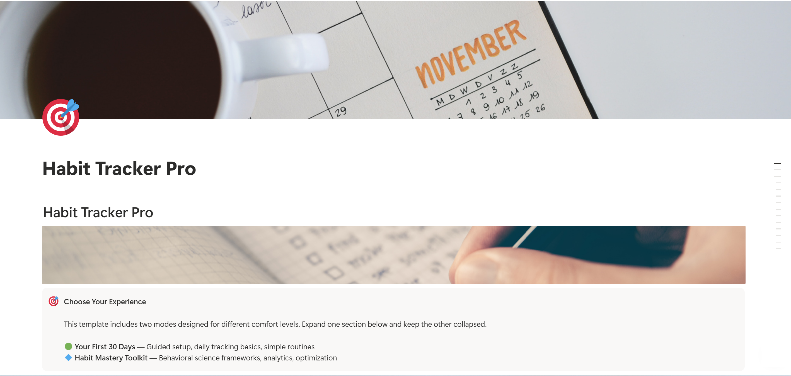
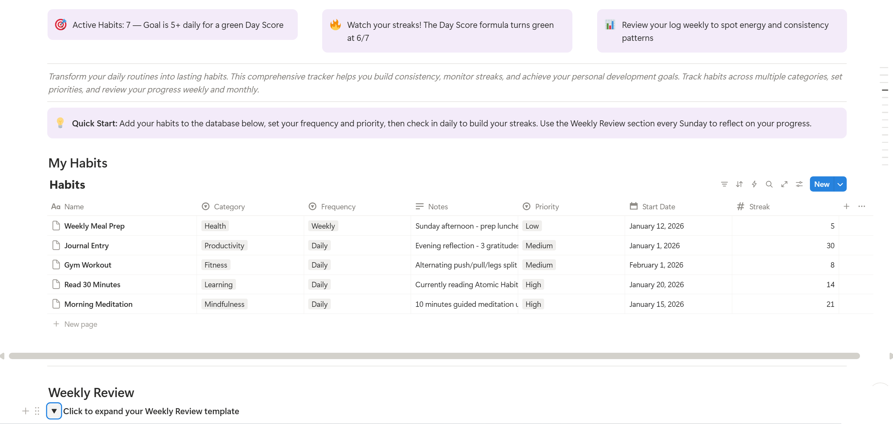

Notion · 2 databases · Science-backed framework
You don't lack willpower. You lack a system that makes consistency automatic.

Students, professionals, and anyone who has downloaded a habit app, used it for two weeks, then quietly deleted it. If you've ever set a goal on January 1st and abandoned it by February, this was built for you.
Habit apps give you checkboxes and streaks — then leave you alone with no insight into why you keep failing on Wednesdays, why your morning routine collapses on weekends, or which habits actually move the needle. You're tracking activity without understanding behavior.

Start with 3 keystone habits. Follow the guided daily check-in routine. The template walks you through exactly what to track and when — no decisions required.
Unlock habit stacking chains, cross-reference completion rates against energy levels, build custom 30-day challenges, and use the monthly review system to optimize your routine like a behavioral scientist.
Built on the Habit Loop (cue → routine → reward) from Charles Duhigg's research and the identity-based habit framework from James Clear's Atomic Habits. Uses implementation intentions — the psychological technique of binding a behavior to a specific cue and context, which studies show increases follow-through by over 40%.
The visual streak system exploits loss aversion: once you've built a 15-day streak, the psychological cost of breaking it becomes a more powerful motivator than the original goal.
This is Nth-order design in practice: a daily check-in (first order) builds consistency (second order), which reshapes your identity as someone who follows through (third order), which transforms your discipline across health, work, and relationships.
Generic habit apps track completion. This template tracks behavior patterns. Most tools can tell you that you missed Tuesday — ours shows you why Tuesdays fail and what to change.
Your entire life in one command center. Goals, projects, habits, and routines unified in a single Notion workspace.
Take control of your money with automated tracking, spending insights, and savings goals that compound over time.
Manage classes, assignments, exams, and GPA in one organized workspace designed for academic success.